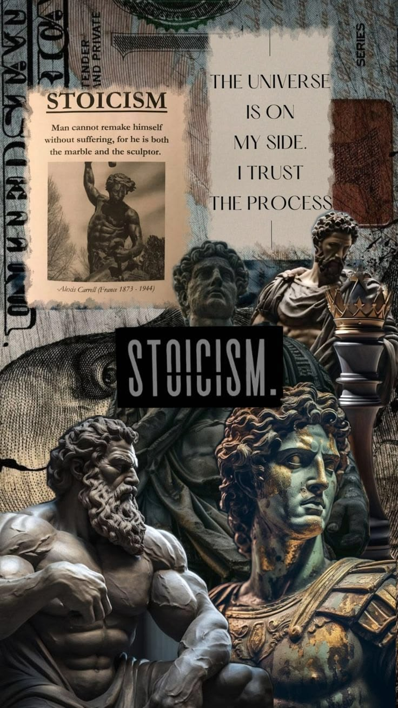

Virtue is the highest good
Stoics argued that only moral excellence is truly good and only vice is truly bad. Character, not circumstance, decides whether a life goes well.
Stoicism is an ancient Greek and Roman school of philosophy, founded by Zeno of Citium in Athens around 300 BCE, which teaches that virtue is the highest good and that a good life comes from using reason, acting justly, and accepting what lies beyond our control.

Stoicism is an ancient school of philosophy that began in Athens around 300 BCE and remained influential across the Greek and Roman worlds for roughly five centuries. It holds that human beings live well when they cultivate virtue (wisdom, justice, courage, and self-control) and think clearly about what is and is not up to them. The Stoics treated philosophy not only as theory but as a practical art of living.
The name comes from the Stoa Poikile, the "Painted Porch" in Athens where the founder, Zeno of Citium, taught his students. Stoic philosophy has three connected parts: logic, physics, and ethics. Together they present a picture of a rationally ordered universe in which the best human life is one lived in agreement with reason and nature. Its origins belong to the wider story of ancient Greek philosophy and the Hellenistic and Roman philosophical world
Stoicism is also one of the most widely read ancient philosophies today, largely because of three Roman voices whose writings survive: Seneca, Epictetus, and Marcus Aurelius. It is worth separating the philosophy from the everyday word. In ordinary English, a "stoic" person is someone who endures hardship without complaint, which captures only a small part of what the ancient Stoics actually taught.
Stoicism began in Athens around 300 BCE, when Zeno of Citium started teaching at the Stoa Poikile. According to the ancient biographer Diogenes Laertius, who wrote centuries later, Zeno came to Athens from Citium in Cyprus and studied with the Cynic philosopher Crates and with teachers from other schools before founding his own. His followers were first called Zenonians and only later "Stoics," after the porch where they gathered.
The Stoics revered Socrates as a model of the philosophical life, and their ethics grew partly out of Cynic ideas about virtue and self-sufficiency. Zeno's successors Cleanthes and Chrysippus turned a set of teachings into a complete, systematic philosophy. Chrysippus in particular developed Stoic logic and wrote hundreds of works, though almost all of the early Stoic writings are now lost and survive only in quotations and summaries by later authors.
Stoicism then spread from Athens to Rome, where it appealed to statesmen, jurists, and emperors. It competed with Epicureanism, Skepticism, Platonism, and Aristotelianism, and it shaped Roman ideas about duty, law, and citizenship. As an organized school it faded in late antiquity, but its ideas continued to circulate in Christian thought, Renaissance humanism, and modern philosophy.
Zeno, Cleanthes, and Chrysippus laid the foundations of Stoic logic, physics, and ethics in Athens from about 300 BCE.
Panaetius and Posidonius adapted Stoicism for a Roman audience. Panaetius influenced Cicero's work on duty.
Seneca, Musonius Rufus, Epictetus, and Marcus Aurelius emphasized ethics and daily practice, and their writings survive.
The main principles of Stoicism are that virtue is the only true good, that we should live in agreement with reason and nature, that we should focus on what is up to us, and that destructive emotions arise from mistaken judgments. Each principle supports the others, so Stoicism works best as one connected outlook rather than a list of tips.
Stoics argued that only moral excellence is truly good and only vice is truly bad. Character, not circumstance, decides whether a life goes well.
A good life means using our rational nature well and living in harmony with the rational order the Stoics saw in the cosmos.
Our judgments, choices, and actions are within our power; health, wealth, reputation, and outcomes are not. Peace of mind depends on knowing the difference.
Stoics held that destructive emotions come from mistaken beliefs about what is good or bad, so examining our beliefs changes how we feel.
Health, wealth, and reputation may be reasonably preferred, but Stoics denied that they are good in themselves or necessary for a good life.
Stoics taught that all people share reason and therefore share duties to one another, an ideal often described as cosmopolitanism.
Stoic philosophy has three connected parts: logic, physics, and ethics. Ancient sources describe the relationship with images such as an egg, a fertile field, or a living animal, in which each part protects or nourishes the others. Ethics is usually treated as the goal, while logic and physics supply its foundations.
Includes the study of language, argument, and knowledge. Chrysippus developed an early form of propositional logic, and the Stoics analyzed how impressions lead to belief through assent. See also logic.
Covers the nature of the cosmos. Stoics described a material universe pervaded by logos, or divine reason, governed by providence and cause. See also metaphysics.
Covers virtue, the good life, emotions, and duty. This is the part most modern readers know best. See also ethics.
Most modern readers meet Stoicism through its ethics and practical exercises, because the surviving Roman texts stress them. For the ancient Stoics, however, ethics was justified by their views about nature, reason, and knowledge, so the three parts were meant to be studied together.
The four cardinal Stoic virtues are wisdom, justice, courage, and moderation. They were shared across much of Greek ethics, but the Stoics gave them a distinctive role: virtue alone, they argued, is enough for eudaimonia, a flourishing or well-lived life.
Practical wisdom is the skill of judging correctly what is good, bad, and indifferent, and of seeing situations as they are.
Justice means fairness and fulfilling our duties to family, community, and humanity as rational beings.
Courage is the ability to face danger, pain, and loss while continuing to act rightly, including moral courage in difficult decisions.
Also called temperance or self-control, moderation means governing desire and avoiding excess in pleasure, wealth, and ambition.
Stoics regarded the virtues as unified: someone who truly has one has them all, because each is a form of the same rational excellence. They also described the ideal wise person, or sage, as extremely rare. Seneca compared such a person to a phoenix. The realistic goal was therefore progress, not perfection, and Stoic texts often address "those making progress."
The dichotomy of control is the Stoic teaching, associated with Epictetus, that some things are up to us and others are not, and that we should place our peace of mind in the first group. At the start of the Enchiridion, Epictetus lists our judgments, impulses, desires, and aversions as within our power, while body, property, reputation, and public office are not.
The idea is a tool for clarity, not a call to passivity. If you prepare well for an exam, the preparation is up to you, but the result is not entirely so. The Stoic aim is to put full effort into the first and accept the second calmly. The Stoics also used a "reserve clause": we act while acknowledging that events might turn out otherwise, so we say, in effect, "I will do this, if nothing prevents it."
Modern writers sometimes add a middle category of things that are partly in our control, such as influencing another person's opinion or a team's performance. Whatever the label, the Stoic lesson is to separate effort from outcome. This is why Epictetus's teaching, developed while he was a former slave turned teacher, remains the most direct source for this practice.
“People are troubled not by events themselves, but by the judgments they form about events.”Epictetus, Enchiridion 5 (paraphrased)
No. Stoicism aims to reduce destructive passions that come from mistaken judgments, not to eliminate all feeling. The Stoics used the term pathos for a disturbing passion that overrides reason, and they grouped such passions under desire, fear, distress, and pleasure. They argued that these arise when we wrongly treat external things as truly good or bad.
The Stoic ideal is sometimes called apatheia, but it does not mean apathy. It means freedom from destructive passions. Stoics also described "good emotions" (eupatheiai): joy, rational wish, and caution. Seneca further distinguished involuntary "first movements," such as flinching or blushing, from full passions, since these happen before we give our assent to a judgment.
This is why the everyday meaning of "stoic" is misleading. A person who hides grief and pretends nothing hurts is not necessarily following Stoic philosophy. The ancient Stoics expected people to feel loss and to care deeply about family and community, while training themselves to respond with reason, justice, and steadiness rather than panic or rage.
Stoics believed the cosmos is rationally ordered, pervaded by a divine reason called logos, which they also called God, Zeus, Nature, or Providence. Everything in this universe, including the divine, was thought to be material, and events follow one another through a chain of causes. Most early Stoics also held that the world is periodically destroyed by fire and reborn in a similar form.
Because events are causally determined, the Stoics had to explain moral responsibility. Chrysippus argued that our own character still contributes to what we do. In a famous analogy, a push may start a cylinder rolling, but its shape determines how it rolls. In this way he defended a form of what philosophers now call compatibilism.
This confidence in an ordered universe is one reason Stoicism is often contrasted with nihilism, which questions whether objective meaning or value exists at all. Marcus Aurelius, however, sometimes framed the choice as "providence or atoms" and concluded that one should live virtuously either way. Discussions of these questions belong to metaphysics as well as ethics.
Zeno of Citium, Cleanthes, and Chrysippus shaped early Stoicism, while Seneca, Epictetus, and Marcus Aurelius are the best-known Roman Stoics because their writings survive. The Roman statesman Cato the Younger was also admired as a Stoic exemplar for his political integrity.
Founded the Stoic school in Athens around 300 BCE and taught at the Painted Porch.
Zeno's successor, known for his Hymn to Zeus, one of the few substantial early Stoic texts to survive.
The great systematizer of Stoicism, who developed its logic and defended its doctrines against critics.
Middle Stoics who brought Stoic ideas into Roman public life and broadened their scientific and historical scope.
Roman statesman and writer whose letters and essays explore anger, time, grief, and wealth.
Roman teacher of Epictetus who stressed practical training and argued that women should also study philosophy.
Former slave turned teacher whose lectures gave us the dichotomy of control and the three disciplines.
Roman emperor whose private notebook, the Meditations, became a classic of Stoic reflection.
For a wider map of the figures in this tradition, browse the philosophers and thinkers section of the library.
The best-known surviving Stoic works are Marcus Aurelius's Meditations, Epictetus's Discourses and Enchiridion, and Seneca's Letters to Lucilius and essays such as On the Shortness of Life. Almost all of them come from the Roman period, which is why the popular image of Stoicism is heavily practical.
The founders' own works survive mainly in fragments. Early Stoic doctrine is reconstructed from later writers such as Diogenes Laertius, Cicero, Plutarch, Sextus Empiricus, and Stobaeus, who report or criticize Stoic ideas. This means scholars must be cautious when assigning a teaching to Zeno rather than to Chrysippus or a later Stoic.
For beginners, Epictetus's Enchiridion is short and practical, and Seneca's letters are personal and readable. The Meditations is powerful but is a private notebook, not a systematic introduction. You can find these and other essential titles in the philosophical books section.
Stoicism is practiced through daily exercises: separating what is in your control from what is not, anticipating setbacks, reviewing your day, reflecting on mortality, viewing events from a wider perspective, and acting for the common good. The French historian Pierre Hadot described these as "spiritual exercises," meaning ways of training attention and judgment.
When something troubles you, ask what part is your judgment and action and what part is not. Then give your effort to the first.
Also called negative visualization (premeditatio malorum): imagine possible setbacks in advance so they are less shocking and you can respond wisely.
Seneca describes examining the day at night: what went well, where you erred, and how to do better tomorrow, without harshness.
Reflecting on death (memento mori) reminds Stoics to use time well and to hold possessions and status lightly.
Marcus Aurelius and Seneca encouraged imagining events from a cosmic vantage point, which shrinks petty worries into proportion.
Seneca and Musonius Rufus recommended occasionally practicing simple food, cold, or limited comfort to reduce the fear of loss.
These exercises are most useful when combined with the Stoic virtues and a sense of duty to others, not just personal calm. The Stoics valued using philosophy, so they urged readers to act on what they had learned instead of collecting quotations.
Stoic practices are philosophical exercises, not medical treatment. If you are dealing with persistent anxiety, depression, or trauma, a qualified mental health professional can offer support that philosophy alone cannot.
Stoicism teaches that virtue is the only good and encourages engagement in public life, while Epicureanism teaches that pleasure, understood as freedom from pain and mental disturbance, is the highest good and recommends a quiet life among friends. Both schools arose in Athens in the early Hellenistic period, and both aimed at tranquility.
The two schools shared more than their reputations suggest. Both treated philosophy as therapy for the soul, both viewed the world in materialist terms, both tried to free people from fear of death and from unlimited desire, and both valued self-sufficiency. Seneca even quotes Epicurus approvingly in his letters. You can explore the other side of this comparison on the Epicureanism page and in the wider overview of Hellenistic and Roman philosophy.
Founded by Zeno around 300 BCE. Highest good: virtue. Universe: rational, providential, and determined. Public life: encouraged as a duty. Death: a natural event and an indifferent, not an evil.
Founded by Epicurus around 306 BCE. Highest good: pleasure as absence of pain and disturbance. Universe: atoms and void, with no divine providence. Public life: usually avoided. Death: "nothing to us."
In short, the Stoics asked how to live virtuously within a rational cosmos, while the Epicureans asked how to live pleasantly and calmly in a universe without a guiding plan. Their disagreement about what makes life good is one of the great debates in ethics.
Stoicism grew out of Cynicism, shares some practical themes with Buddhism, contrasts with existentialism on the source of meaning, and opposes nihilism by holding that virtue and rational order are real. These comparisons are useful, but each tradition has its own assumptions, so they should not be treated as interchangeable.
Zeno studied with the Cynic Crates, and Stoicism kept the Cynic emphasis on virtue and independence from convention. The Stoics were more systematic, social, and willing to value "preferred" external things. See Cynicism.
Both stress mental discipline and reducing suffering by changing how we judge and attach to things. Their metaphysics differ, and no historical link is established. See ancient Indian philosophy.
Existentialists emphasize freedom and the creation of meaning without a given human nature, while Stoics ground the good life in reason and nature. Nietzsche criticized Stoic ethics directly. See existentialism and Nietzsche.
Nihilistic positions question objective meaning or value, while Stoics affirm a rational order and the objective worth of virtue. See nihilism.
Stoicism is popular today because it offers practical, accessible tools for resilience, decision-making, and emotional balance, and because it influenced modern cognitive therapy. Albert Ellis, founder of rational emotive behavior therapy, and Aaron Beck, founder of cognitive therapy, both acknowledged the influence of ancient Stoic ideas about judgment and emotion.
Vice Admiral James Stockdale, a U.S. Navy officer held as a prisoner of war in Vietnam, later wrote that Epictetus's teaching helped him endure captivity. Since the 2010s, the modern Stoicism movement has grown through community events such as Stoic Week, which began in 2012 at the University of Exeter, and through popular books by writers such as William Irvine, Massimo Pigliucci, and Ryan Holiday.
A caution is useful. Online versions of "stoicism" sometimes reduce the philosophy to toughness or emotional suppression, which the ancient texts do not support. Reading primary sources such as Marcus Aurelius and Seneca gives a fuller and more humane picture.
Critics argue that Stoicism can be too demanding, may underestimate the value of emotion and attachment, and can be read as encouraging passivity in the face of injustice. The Stoic sage is an ideal few or none could reach, and some critics say a philosophy of "indifferent" externals sits uneasily with real concern for suffering, poverty, or loss.
Philosophers have also questioned how Stoic determinism fits with moral responsibility, and whether the claim that virtue alone suffices for happiness is plausible in cases of severe suffering. Martha Nussbaum's work on Hellenistic ethics is a well-known example of a serious engagement with these worries. Nietzsche accused the Stoics of reading their own moral values into nature.
Defenders respond that Stoicism was never a doctrine of inaction: Stoics such as Seneca and Marcus Aurelius were deeply involved in politics, and Stoic ethics stresses duty and justice. Another historical criticism is personal: Seneca was accused of hypocrisy because of his wealth, a debate explored on his page.
Stoicism shaped Roman law and political thought, early Christian writers, Renaissance humanists, and modern philosophers. Its ideas about natural law, common humanity, and the rational order of the cosmos traveled far beyond the Athenian porch where they began.
Stoic ideas of natural law and a shared human community influenced Cicero and Roman legal thought, and later conceptions of universal rights.
Concepts such as logos, natural law, and the moral discipline of the passions influenced many early Christian writers.
Justus Lipsius revived Stoicism as "neo-Stoicism" in the late sixteenth century, and its themes appear in Descartes and Spinoza. See modern philosophy.
Cognitive behavioral approaches and the modern Stoicism movement draw on the Stoic idea that judgments shape emotions.
Stoicism endures because it offers a complete philosophy of life that is also usable in ordinary moments: what should I do, what can I control, and what kind of person do I want to be?
In simple terms, Stoicism is the practice of focusing on your own choices, values, and judgments rather than on things you cannot control, and of treating good character as the true measure of a good life. It asks you to act well, respond to events with reason, and care for others, while accepting that some outcomes are not yours to decide.
Stoicism is not about hiding emotions or withdrawing from the world. It is a way of thinking that aims to make you steadier, fairer, and more useful to others, whether you are a student, a worker, a parent, or an emperor.
This introduction is based on surviving Stoic texts and modern scholarly reference works. The links below are starting points for readers who want to check the historical claims, explore primary sources, or continue to more detailed scholarship.
Editorial note: Ancient evidence for early Stoicism is fragmentary. Where the sources are uncertain or later interpretation is involved, this page identifies that uncertainty rather than presenting it as settled fact.
Stoicism is an ancient Greek and Roman school of philosophy, founded by Zeno of Citium around 300 BCE, that teaches that virtue is the highest good and that a good life comes from reason, justice, courage, self-control, and acceptance of what we cannot control.
The main principles of Stoicism are that virtue is the only true good, that we should live in agreement with reason and nature, that we should focus on what is up to us, and that destructive emotions arise from mistaken judgments.
Stoicism was founded by Zeno of Citium, who began teaching at the Stoa Poikile (Painted Porch) in Athens around 300 BCE. Cleanthes and Chrysippus continued and systematized the school.
The four cardinal Stoic virtues are wisdom, justice, courage, and moderation (also called temperance or self-control). Stoics regarded them as aspects of a single excellence of character.
The dichotomy of control is the Stoic teaching, associated with Epictetus, that some things are up to us (our judgments, choices, and actions) while others are not (such as other people's behavior, reputation, or outcomes), and that we should place our peace of mind in the first.
No. Stoicism aims to reduce destructive passions that come from mistaken judgments, not to eliminate all feeling. Stoics valued good emotions such as joy, rational wish, and caution, and they accepted involuntary first reactions as natural.
Stoicism teaches that virtue is the only good and encourages engagement in public life, while Epicureanism teaches that pleasure, understood as freedom from pain and mental disturbance, is the highest good and recommends a quiet life among friends. Both aim at tranquility.
Zeno of Citium, Cleanthes, and Chrysippus shaped early Stoicism, while Seneca, Epictetus, and Marcus Aurelius are the best-known Roman Stoics because their writings survive.
Common Stoic practices include separating what is in your control from what is not, anticipating possible setbacks, reviewing your day each evening, reflecting on mortality, viewing events from a wider perspective, and acting for the common good.
No. Stoicism is a philosophy, not a religion. Stoics held that the cosmos is rationally ordered and sometimes called this order God, Zeus, or Nature, but the school had no central church, creed, or required rituals.
Yes. Stoic ideas influenced cognitive behavioral therapies and remain popular as practical tools for resilience, decision-making, and emotional balance, though modern uses often adapt or simplify the ancient philosophy.
Many readers begin with Epictetus's Enchiridion, Seneca's Letters to Lucilius, or Marcus Aurelius's Meditations. The Enchiridion is short and practical, while the Meditations is a personal notebook rather than a systematic introduction.
Stoicism is important because it offers one of the most complete ancient philosophies of how to live, joining logic, nature, and ethics into a practical way of life. It shaped Roman law, influenced Christian and Renaissance thought, and continues to inform modern psychology and everyday self-improvement.
Its central ideas are simple to state and hard to practice: value character above circumstance, separate what is up to you from what is not, and act with justice toward others. The tradition also contains real debates about emotion, fate, and human limits, which is what keeps it philosophically alive.
Studying Stoicism therefore means more than collecting quotations. The deeper question is whether a good life depends chiefly on outward success or on the quality of our own reasoning and actions, and the Stoics' answer still challenges readers today.